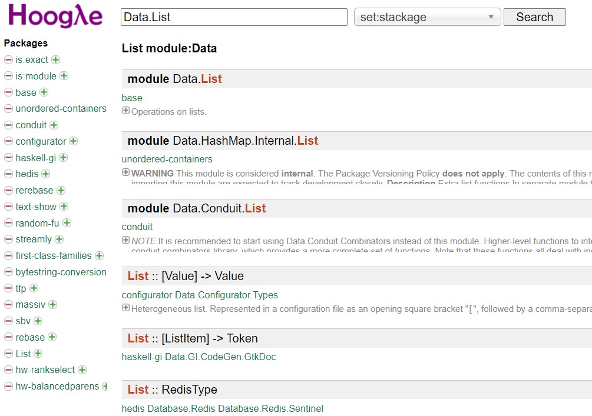

Data.List/Set/Map 模組
February 9, 2022來看看 Haskell 提供的標準模組中，有哪些基本常用的函式可以使用，詳細介紹每個 API 如何使用其實也蠻沒意義的，這是 API 文件該做的事，這邊的重點還是擺在一個足夠讓你往後探索的基礎。
Hackage 與 Hoogle
Haskell 可用的套件相關說明資訊，可以在 Hackage 找到，標準套件可以在 The base package 找到。
在開始之前，得介紹一下 Hoogle，以及 Haskell API 搜尋引擎，對於查詢 API 如何使用相當方便：

Data.List 模組
之前介紹過不少 list 的應用，也用過幾個函式，像是 ++、head、tail 等，這些函式實際上是位於 Data.List 模組，不過這幾個函式因為常用，基於方便將之匯入了 Prelude 模組，因此，之前不用特別 import 也能使用。
如先前介紹，++ 可以串接兩個 list，這沒什麼好多做解釋的，到是來看看怎麼實現會比較有趣：
plus :: [a] -> [a] -> [a]
plus [] lt = lt
plus (x:[]) lt = x : lt
plus (x:xs) lt = x : plus xs lt
這個 plus 函式，用起來就像 ++，例如：
ghci> [] `plus` [4, 5, 6]
[4,5,6]
ghci> [1, 2, 3] `plus` [4, 5, 6]
[1,2,3,4,5,6]
ghci>
從 plus 實作可以看到，它會走訪第一個 list，因此若第一個 list 很長，使用 plus 會比較沒效率，也就是說，對於 ++ 左邊的 list 很長時，使用 ++ 串接會沒有效率。
如果是單純地在 list 收集元素，應當避免 xs ++ [1]、xs ++ [2, 3] 這樣的動作，改使用 1 : xs、2 : 3 : xs 會是比較好的選擇。
依此類推的話，就是說，對於字串的串接，若 ++ 左邊的字串很長，也要避免使用 ++ 來串接，例如，單純地收集字元的話，應避免使用 xs ++ "a"、xs ++ "bc"，而可以改用 'a' : xs、b : c : xs，會是比較好的選擇。
head、tail 實際上都可以改用模式比對，視情況而定，有時用 head、tail 方便或易讀，有時用模式比對方便或易讀，與它們相對的是 init 與 last，分別取首清單與尾元素，實作上像是：
init' :: [a] -> [a]
init' [] = error "empty list"
init' (x:[]) = []
init' (x:xs) = x : init' xs
last' :: [a] -> a
last' [] = error "empty list"
last' (x:[]) = x
last' (_:xs) = last' xs
這邊看到了 error 函式，它可以從純函式中拋出 Exception，就呼叫這種有可能執行到 error 的純函式而言，你應該在呼叫前做好條件檢查，別讓 error 有機會執行，就目前來說知道這個就夠了，後續談不純世界中的例外處理時，才會詳細介紹 error 等的使用。
對於一個元素在不在 list 中，可以使用 elem，如果想知道索引位置，可以使用 elemIndex，後者沒有匯入 Prelude，需要 import Data.List 才能使用，來看看怎麼實現：
elem' :: Ord a => a -> [a] -> Bool
elem' _ [] = False
elem' ele (x:xs) = if ele == x then True else elem' ele xs
elemIdx :: (Eq a, Num a) => a -> [a] -> Maybe a
elemIdx _ [] = Nothing
elemIdx ele xs = idxOf xs 0
where
idxOf (x:xs) idx =
if ele == x then Just idx
else if null xs then Nothing else idxOf xs (idx + 1)
elem' 比較簡單，就是傳回 True 或 False，而在 elemIdx 這方面，因為元素可能不存在於 list 中，因此搜尋結果可能有索引值也可能沒有，因此傳回型態會是 Maybe。
像這樣來試著做一些基本函式的實作，對於模組中函式的原理與使用，就會有比較多的認識。
fold 的相關函式
在〈map/filter/fold〉談過 fold，當時的 fold 函式實現方式，其實就類似 Haskell 內建的 foldr 函式，實際的 foldr 函式還接受一個起始值，例如：
ghci> foldr (+) 0 [1, 2, 3, 4, 5]
15
ghci>
實現的方式會像是：
foldR :: (a -> b -> b) -> b -> [a] -> b
foldR f z [] = z
foldR f z (x:xs) = x `f` (foldR f z xs)
之所以稱之為 foldr，是因為 foldr (+) 0 [1, 2, 3, 4, 5] 會是從最右邊 1 開始，每折一次，就將上次執行結果與左邊的元素用指定的函式處理，foldr 的 r 就是 right 的意思，foldr 接受的函式，左邊參數是當次的元素，右邊參數是上一次計算的結果，在走訪整個 List 到最右端之後，接下來就是：
1 + (2 + (3 + (4 + (5 + 0)))
1 + (2 + (3 + (4 + 5)))
1 + (2 + (3 + 9))
1 + (2 + 12)
1 + 14
15
有 foldr，那是不是表示有 foldl？是的！foldl 也像是在折紙，foldl (+) 0 [1, 2, 3, 4, 5] 的話，會從 list 的最左邊開始，實作上像是：
foldL :: (a -> b -> a) -> a -> [b] -> a
foldL f z [] = z
foldL f z (x:xs) = let z' = z `f` x
in foldL f z' xs
記得，foldl 接受的函式，左邊參數是上一次計算的結果，右邊參數是當次的元素，與 foldr 接受的函式是相反的，如果執行 foldl (+) 0 [1, 2, 3, 4, 5]，過程會像是：
foldl f (0 + 1) [2, 3, 4, 5]
foldl f (1 + 2) [3, 4, 5]
foldl f (3 + 3) [4, 5]
foldl f (6 + 4) [5]
foldl f (10 + 5) []
15
foldl 就像是逐步從頭消減 list 來計算，因此，foldl 有時在其他語言稱為 reduce，有的語言還會有另有 reduceRight 的版本。
不過上面的過程，應該是嚴格版本的 foldl' 之行為，foldl' 不會進行惰性求值，而 foldl 會進行惰性求值，因此，foldl 實際在運算時，會像是：
foldl f (0 + 1) [2, 3, 4, 5]
foldl f ((0 + 1) + 2) [3, 4, 5]
foldl f (((0 + 1) + 2) + 3) [4, 5]
foldl f ((((0 + 1) + 2) + 3) + 4) [5]
foldl f (((((0 + 1) + 2) + 3) + 4) + 5) []
foldl f ((((1 + 2) + 3) + 4) + 5) []
foldl f (((3 + 3) + 4) + 5) []
foldl f ((6 + 4) + 5) []
foldl f (10 + 5) []
foldl f 15 []
15
因此，使用 foldl 處理很長的 List 時，常會遇到 stackoverflow 的問題，這時可改用嚴格版本的 foldl'。
如果指定的處理函式不具結合律，應瞭解 foldl、foldr 的差別，例如 +、* 具有結合律，因為 (a + b) + c 與 a + (b + c) 是相同的，- 就不具結合律，例如 foldl (-) 0 [1 .. 10] 結果是 -55，而 foldr (-) 0 [1 .. 10] 結果是 -5。
有時指定的函式本身具有結合律，也要留意一下函式本身的特性，例如 foldl (++) "" ["Justin", "Monica", "Irene"]，雖然 ++ 具結合律，不過在上面討論過，++ 會將左邊的 List 整個走訪過一遍，因此左邊的 List 若很長，會有效率上的問題，執行 foldl (++) "" ["Justin", "Monica", "Irene"] 的話，最後會有 "JustinMonica" ++ "Irene" 的結果，也就是左邊的字串會越來越長，++ 效率就會越來越差，換用 foldr (++) "" ["Justin", "Monica", "Irene"] 會比較好一些，類似地，如果結果是要產生新的 List，使用 foldr 效率會好一些。
foldl、foldr 必須指定初值，foldl1、foldr1 會使用折紙時第一個遇到的元素當初值，因此使用 foldl1 處理 [1, 2, 3, 4, 5] 時，因為是從左折，初值就是 1，使用 foldr1 處理 [1, 2, 3, 4, 5] 時，因為從右折，初值就是 5。
恒等值的考量
除了惰性、結合律以及指定處理函式本身的特性考量之外，fold 相關函式還可以有讓初值為恒等值（Identity）的考量。所謂恒等值，是指使用指定的函式 f 來處理恒等值 n 及 List 中任一元素 m，結果還是還是 m，也就是 f m n 結果會是 m，例如，指定函式為 + 而恒等值為 0 時， 0 + 1 還是 1、0 + 2 還是 2，這麼做的目的在於，如果 List 很長，打算將之切為數等分來計算時，也不致於因為發生累計問題（處理函式要具有結合律）。
例如，foldl (+) 0 [1 .. 100] 的結果是 5050，也許將來你可以實現一個 parallelFoldl，會將 [1 .. 100] 切成四份平行運算，實作概念相當於 (foldl (+) 0 [1 .. 25]) + (foldl (+) 0 [26 .. 50]) + (foldl (+) 0 [51 .. 75]) + (foldl (+) 0 [76 .. 100])，這樣就沒有問題，結果還是 5050。
如果因為某個原因，希望從 5 開始累加，在不平分處理下，雖可以寫成 foldl (+) 5 [1 .. 100]，結果就是 5055，不過，若 foldl 改為自定義的 parallelFoldl (+) 5 [1 .. 100]，結果會相當於 (foldl (+) 5 [1 .. 25]) + (foldl (+) 5 [26 .. 50]) + (foldl (+) 5 [51 .. 75]) + (foldl (+) 5 [76 .. 100])，也就是 5070，那就不對了，對於這個需求，一開始應該是寫成 5 + foldl (+) 0 [1 .. 100] 才是正確的，這樣若 foldl 改為 parallelFoldl，結果就相當於 5 + (foldl (+) 0 [1 .. 25]) + (foldl (+) 0 [26 .. 50]) + (foldl (+) 0 [51 .. 75]) + (foldl (+) 0 [76 .. 100])，這樣就沒有問題。
處理無限長 list？
foldl、foldr 經常被討論的問題之一就是，誰能處理無限長的 list？這問題就在於，無限長的 list 長什麼樣呢？[1 ..]！從左開始折的話，這紙一定是折不盡的，可是，如果從右邊開始折，開始折的邊界又在哪呢？再來看一下 foldR：
foldR :: (a -> b -> b) -> b -> [a] -> b
foldR f z [] = z
foldR f z (x:xs) = x `f` (foldR f z xs)
為了完成 f 的處理，除了 x 之外，還得等待 f 第二個引數，也就是 foldR f z xs 的結果，這就是上面對 foldr 指定 + 時，必須走訪整個 List 才能得到結果的情況。那麼，如果 f 不用等待第二個引數呢？像是指定 \elem y -> elem 會如何？
ghci> foldr1 (\elem y -> elem) [1..]
1
ghci>
這就是了，真的是蠻聰明的，雖說打算從右折無限長的 list，不過，每次都只傳回當次元素，一路往左看到，盡頭不就是個 1 嗎？
不過，指定 \elem y -> elem 看起來沒什麼用，來想個有用的好了！嗯！對一個元素為 Bool 的無限長 list 做 || 處理如何？在 Data.List 中有個 iterate 可以建立無限長的 list，例如，iterate not True 就會產生 [True, False, True, False, True ...] 一直循環下去，那麼 foldr (||) False $ iterate not True 會如何？
ghci> foldr (||) False $ iterate not True
True
ghci>
雖說是無限長，不過 || 的特性是，只要有一個為 True，就可以判定整個為 True，不用等另一個引數處理完畢了，那麼 foldr (||) $ iterate not True 又有什麼用？只能判定 list 是不是有 True 存在嘛！那麼這個呢？
any' :: (a -> Bool) -> [a] -> Bool
any' f = (foldr (||) False) . (map f)
f 是可將值對應至 Bool 的函式，map f 就可以將任意 list 轉為 Bool 元素的 list，這個 list 交給 foldr (||) False，就成了可以判斷 list 中，是否有符合特定條件的元素存在之函式，例如，想知道無限長的 list 中，是不是有能某值整除的數，在 Data.List 中，已經存在 any 函式，因此可以如下：
ghci> let a = 10
ghci> any (\x -> x `mod` a == 0) [1..]
True
ghci>
Data.Set 模組
集合不允許元素重複，Haskell 的 Data.Set 模組提供了相關功能，你可以從 list 建立 Set：
ghci> import Data.Set
ghci> :t fromList
fromList :: Ord a => [a] -> Set a
ghci>
要使用 Data.Set 的 fromList 函式，你的元素必須是可排序的，也就是必須具有 Ord 的行為，因為 Data.Set 內部實作使用了樹狀結構，元素被加入樹時都會排序，如此下個元素再加入時就可以很快地判定集合中是不是有重複元素。
Data.Set 還提供了 intersection、union、difference、insert、toList 等函式。例如：
ghci> let s1 = fromList [1, 2, 3, 4, 5]
ghci> let s2 = fromList [3, 4, 5, 6, 7]
ghci> intersection s1 s2
fromList [3,4,5]
ghci> union s1 s2
fromList [1,2,3,4,5,6,7]
ghci> difference s1 s2
fromList [1,2]
ghci> insert 6 s1
fromList [1,2,3,4,5,6]
ghci> toList s1
[1,2,3,4,5]
ghci>
Data.Map 模組
Data.Map 模組提供了字典（Dictionary）操作的相關功能，內部實作是樹狀結構，你的鍵必須具有 Ord 的行為，來看幾個簡單的的示範：
ghci> import Prelude hiding (lookup)
ghci> import Data.Map
ghci> let db = fromList [("Justin", "1234"), ("Monica", "5678")]
ghci> lookup "Monica" db
Just "5678"
ghci> keys db
["Justin","Monica"]
ghci> elems db
["1234","5678"]
ghci>